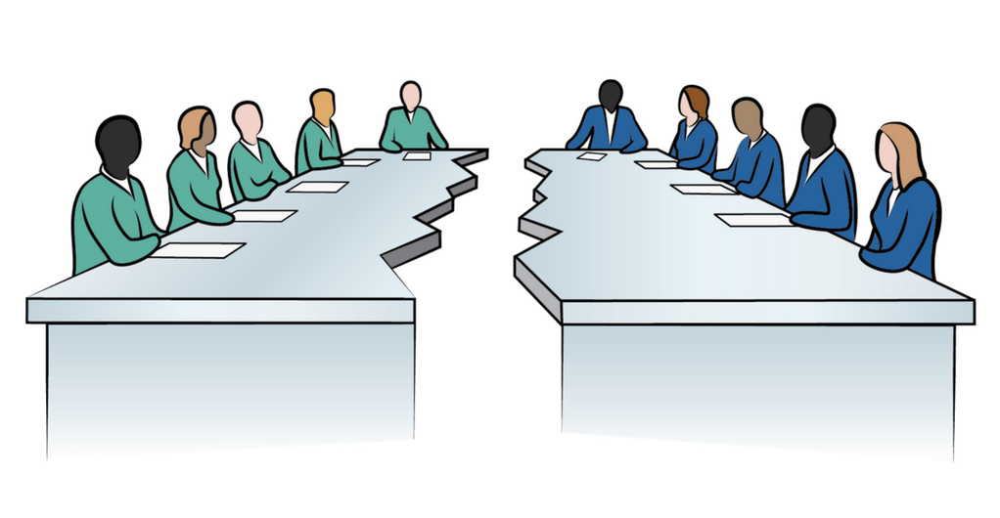

Illegal immigrants alone are estimated to pay in about $7 billion per year into Social Security. In addition, they spend millions of dollars per year, which supports the US economy and helps to create new jobs
if we were to allow our imigration rate drop down in a significant way we would feel tremendous reprocautions. we would lose jobs, economic value as well as population rate. considering many of our imports are brought by imigrants who want to feel at home, import profits might drop and more companies would move oversea.
in addition to the already massive economic hit, the U.S will have further conflict with other nations. many nations remain appease because their citizens are in another nation. to ensure the protection of their citizens both the U.S and other nations make treaties. if we were to have very little citizens from a particular nation, treaties protecting us would probably be denied and we might be at rish as tourist

A report by the National Academies of Sciences, Engineering and Medicine found little to no effect on the wages and employment of native-born workers in the long-term by undocumented immigrants. Immigrants are also entrepreneurs who create jobs. According to a study of the bipartisan immigration bill passed in the Senate in 2014, provisions in the bill could potentially bring between 336,000 and 470,000 undocumented immigrant entrepreneurs into the formal economy. Given that the average immigrant-owned business hires 11 employees, these businesses would account for between 3.7 million and 5.2 million jobs in the formal economy.
Without the contributions of immigrants going into the system, it is estimated that full benefits would not be able to be paid out beyond the year 2037.
DACA recipients—people who came to the United States at a young age and applied for Deferred Action for Childhood Arrivals—paid a $465 fee with their applications, meaning that the program has not cost taxpayers a single cent. Since the program began in 2012, more than 750,000 individuals have had their applications for DACA approved—and the U.S. economy has benefitted. The cost of ending the DACA program would eliminate at least $433.4 billion from the GDP over the course of a decade.